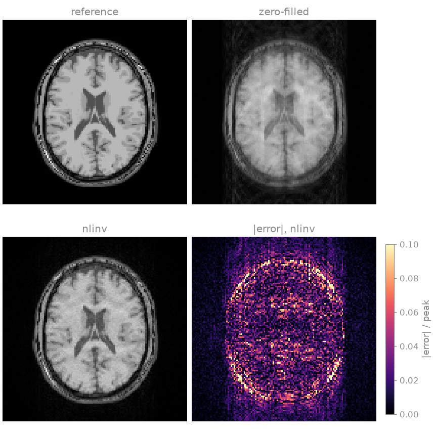
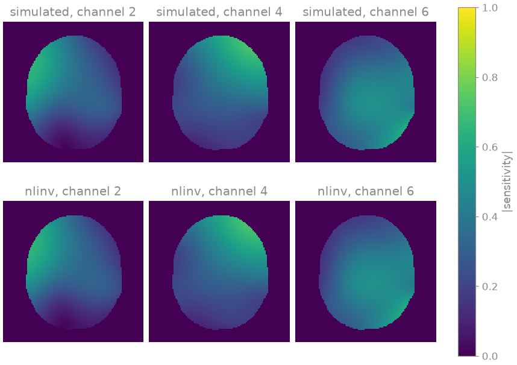
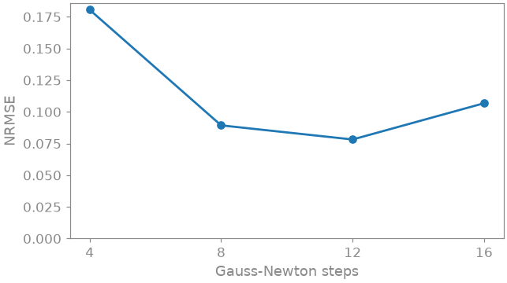

Note
Go to the end to download the full example code.
4. Joint reconstruction of image and sensitivity maps#
In lesson 3 you saw ESPIRiT fail with eight ACS lines while nonlinear inversion kept working, because it fits the sensitivities to every acquired sample rather than to the ACS block alone. In this lesson you keep only six central lines, too few for any separate calibration, and reconstruct the image and the sensitivities together.
In the SENSE model
both \(S_c\) and \(x\) become unknowns, and the model becomes
bilinear: the data are a product of the two. Nonlinear inversion (NLINV)
[2] solves it with the iteratively regularized Gauss-Newton method
(IRGNM) [3]. The factorization into image and sensitivities is
not unique, and NLINV restricts it by building smoothness of the
sensitivities into the model. You first run it as BART’s nlinv,
then write the same reconstruction out as an operator and a solver you can
change.
Learning objectives
Reconstruct an image and its sensitivities jointly with
bartorch.tools.nlinv()from an ACS region too small for ESPIRiT.Explain the ambiguity of the bilinear model and how the Sobolev weighting of the sensitivities resolves it.
Write the same reconstruction as
bartorch.nlop.NonlinearSenseunderbartorch.nlop.IRGNM.See how the number of Gauss-Newton steps acts as a regularization parameter.
Previous: 3. Coil sensitivities. Next: 5. Choosing a regularizer, where you add a prior on the image to the reconstruction and learn how to choose it.
Simulated acquisition#
The object is the BrainWeb slice of lesson 2 [1], at 128 by 128,
and you receive it with BART’s analytical eight-channel head coil, as there.
You keep a third of the phase encodes, drawn at random and more densely near
the centre, but only six fully sampled lines at the centre itself. How the
phantom and the pattern are made is hidden; lines is a vector of ones on
the acquired phase encodes.
import torch
import bartorch
import bartorch.tools as bt
from bartorch import nlop
COILS = 8
ACCELERATION = 3
CALIBRATION = 6 # lines at the centre, far fewer than ESPIRiT needs
sensitivities = bt.coils(t=bt.grid(D=(SIZE, SIZE, 1)), n=COILS)[:, 0]
sensitivities /= bartorch.rss(sensitivities, axes=(0,), keepdim=True)
kspace = bartorch.fft(sensitivities * image, axes=(-2, -1), unitary=True)
kspace = bt.noise(kspace, n=1e-5, s=42)
lines = simulate(ACCELERATION, CALIBRATION)
pattern = lines.reshape(SIZE, 1).to(torch.complex64)
measured = kspace[:, None] * pattern
print(f"{float(lines.mean()):.0%} of the lines, {CALIBRATION} at the centre")
32% of the lines, 6 at the centre
Six central lines tell you where the centre of k-space is, but they do not
calibrate anything on their own. ESPIRiT’s kernel is six points wide by
default, so a six-line ACS region leaves it a single kernel position along
the phase-encoding axis: far too few rows for the calibration matrix of
bartorch.tools.ecalib().
Joint reconstruction#
bartorch.tools.nlinv() takes the k-space and returns the image and,
if you ask, the sensitivities it estimated on the way. maxiter counts
Gauss-Newton steps, not linear iterations. The regularization weight is
halved after every step, so the count is a regularization parameter rather
than a convergence threshold: fewer steps give a smoother image, more steps
admit more noise. BART’s default is eight steps; you use
twelve.
STEPS = 12
reconstruction, estimated = bt.nlinv(
measured,
maxiter=STEPS,
return_sensitivities=True,
)
channel_images = bartorch.ifft(measured[:, 0], axes=(-2, -1), unitary=True)
zero_filled = bartorch.rss(channel_images, axes=(0,))
for name, estimate in (("zero-filled", zero_filled), ("nlinv", reconstruction)):
nrmse = bt.nrmse(image.abs(), estimate.abs(), scaled=True)
print(f"NRMSE, {name:>11}: {nrmse:.3f}")

NRMSE, zero-filled: 0.209
NRMSE, nlinv: 0.078
From a third of the phase encodes and six central lines, nonlinear
inversion removes the aliasing of the zero-filled image. Its error sits at
tissue boundaries, around the skull, and in the noise-like residue that
random sampling leaves. As in lesson 2, scaled=True fits one global
factor before comparing, so the NRMSE compares shapes, not the overall
scale.
The estimated sensitivities#
The coil unknown in NLINV is not the sensitivity map itself but its k-space representation \(\hat{s}\), and the map follows as
a Sobolev-norm weighting that suppresses high spatial frequencies. Every Gauss-Newton step in \(\hat{s}\) is therefore a smooth change of the map, and the joint problem needs no separate penalty on the coils.
This matters because the pair is determined only up to a common factor: multiply every map by a nonzero function \(\gamma(r)\), divide the image by it, and the data do not change (Model-based reconstruction). The weighting restricts \(\gamma\) to smooth functions, so your estimate can differ from the true maps by a smooth common magnitude and phase. To compare the two, you remove that factor: divide the maps by their root sum of squares and subtract the phase of channel 0.
maps = estimated[:, 0]
maps = maps / bartorch.rss(maps, axes=(0,), keepdim=True)
maps = maps * torch.exp(-1j * maps[0].angle())

Inside the head, the normalized estimates reproduce the simulated maps in
both magnitude and phase. Outside it neither factor is determined at all,
since their product is zero there for any pair, so the maps follow from the
initialization and the weighting; the figure masks them. nlinv reports
its image multiplied by the root sum of squares of its maps, so the image
it returns is the one that goes with maps normalized this way.
The model and the solver#
nlinv runs a fixed configuration. To change any part of it, you write
the model and the solver out explicitly.
bartorch.nlop.NonlinearSense is the forward model above as a
nonlinear operator with two inputs, the image and the coil coefficients, and
bartorch.nlop.IRGNM is the Gauss-Newton loop over it. Each step
linearizes the model at the current estimate \(x_k\) and solves
where \(DF_{x_k}\) is the derivative of the forward model, \(x_{\mathrm{ref}}\) is zero unless you give one, and \(\alpha_k\) is halved after every step: the first steps are heavily regularized and the later ones are not.
model = nlop.NonlinearSense(
(COILS, 1, SIZE, SIZE),
pattern=lines.reshape(1, SIZE, 1).to(torch.complex64),
)
print(f"inputs {model.ishapes} -> output {model.oshapes}")
inputs ((1, 1, 128, 128), (8, 1, 128, 128)) -> output ((8, 1, 128, 128),)
To get what nlinv gets, you need three of its settings. It scales the
data by \(100 / \|y\|\) before it starts, which fixes what
\(\alpha\) means, and it runs the conjugate gradients of each step to a
hundred iterations or a relative tolerance of a tenth:
scale = 100.0 / float(torch.linalg.vector_norm(measured))
data = model.prepare(measured * scale)
solver = nlop.IRGNM(iterations=STEPS, cg_maxiter=100, cg_tol=0.1)
fitted, coefficients = solver(data, model)
coil_maps = model.coils(coefficients)
combined = fitted.squeeze() * bartorch.rss(coil_maps[:, 0], axes=(0,))
largest difference from nlinv: 1.0e-03
NRMSE 0.078
The loop you wrote and the application agree to about a thousandth of the image peak, and give the same NRMSE, rather than agreeing to the last bit: the data scaling is computed here and inside the application by different expressions.
What the operator form gives you is access to everything around the step.
You can hand the linearized problem to a solver from bartorch.optim
instead of the conjugate gradients inside the library (inner=optim.CG()
is the same method written out, and a regularized solver makes the step a
regularized one), unroll the loop as bartorch.nlop.IRGNMBlock, and
differentiate a Gauss-Newton step with respect to the data, the iterate,
the regularization centre and \(\alpha\)
(Learned reconstruction). Putting a signal model in front
of the same encoding, to reconstruct parameter maps rather than an image, is
lesson 9 (9. Nonlinear inversion for T2 mapping).
Exercise: Gauss-Newton steps#
The number of Gauss-Newton steps was described above as a regularization
parameter. Run nlinv for a few more step counts and compute the NRMSE
of each image; the plot adds the twelve-step result from above:

4 steps: NRMSE 0.181
8 steps: NRMSE 0.089
12 steps: NRMSE 0.078
16 steps: NRMSE 0.107
The error is lowest at twelve steps and higher on both sides. With four
steps the regularization weight is still large and the estimate is biased
towards the regularization centre; at sixteen the weight has been halved
four more times and the noise amplified by the inversion dominates. The
optimum depends on the noise level and the undersampling: try a different
n in bt.noise and see where the minimum moves. Later steps are also
more expensive than early ones, so a large step count costs considerably
more time.
As a spec#
What this lesson built, stated the way you would ask an agent for it:
With bartorch, reconstruct a 2D Cartesian 8-channel k-space of shape
(coils, 1, y, x), undersampled along y to a third of the lines with only
6 fully sampled central lines, by nonlinear inversion: bt.nlinv with 12
Gauss-Newton steps, returning the sensitivities. Then write the same
reconstruction as nlop.NonlinearSense (with the sampling pattern) under
nlop.IRGNM(iterations=12, cg_maxiter=100, cg_tol=0.1), on data scaled
by 100 / ||y||, and check it against bt.nlinv(normalize=False). Compare
the estimated maps with the true ones after dividing by their root sum
of squares and removing the phase of channel 0.
References#
Total running time of the script: (0 minutes 6.269 seconds)